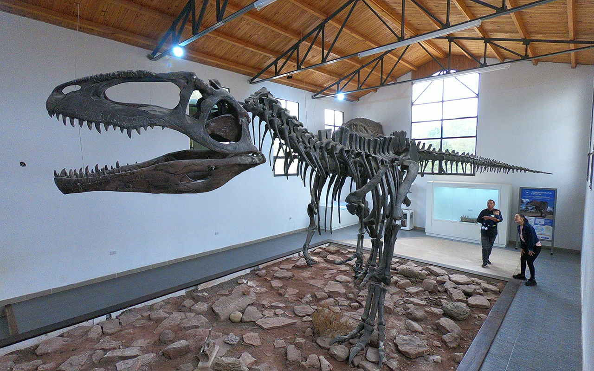

Somos un museo dedicado a la paleontologia, arqueologia e historia de la region de Villa El Chocon y alrededores, inaugurado el 19 de Julio de 1997 y desde 1999 lleva el nombre de "Ernesto Bachmann" quien fue un aficionado de la paleontologia. Este museo nace como consecuencia de diversos hallazgos paleontologicos de gran importancia cientifica hallados en la zona, entre ellos el Giganotosaurus carolinii. En 1993 siendo este uno de los dinosaurios carnivoros mas grandes del mundo, encontrado a 18 km de Villa el Chocon.
Ofrecemos informacion acerca de los hallazgos de dinosaurios en la cuenca neuquina, albergando replicas de osamentas, documentos sobre formas de vida y elementos de trabajo de campo de los paleontologos.